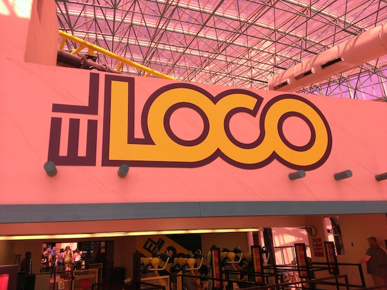

| |
Adventuredome Review

Adventuredome is a really fun and intersting park. It's located right in the Circus Circus Hotel & Casino. And yeah. Circus Circus is not one of the good hotels and casinos on the strip. It's sort of stuck in the 1970s. It's in the real Las Vegas (barely), and not Paradise, NV (what most people think of as Las Vegas). But yeah. Unlike a place like New York New York, where it's just a typical Vegas Hotel & Casino, only with a (TERRIBLE) roller coaster. Adventuredome is actually a theme park. A legit one with a ride selection, and even its own Halloween event. Only it's indoors and part of the Circus Circus Hotel & Casino. It's kind of like how Nickelodeon Universe is its own theme park, but it's also part of the Mall of America. It's the same here, except not as good. But hey. They do have El Loco, which is freaking awesome and definetly the best coaster in all of Nevada. So if you're a coaster enthusiast, you definetly want to stop on by the Adventuredome. It's a really fun place.
Rollercoasters
There is a link to a review of all the Rollercoasters at Buffalo Bills.
Top Coasters
El Loco Review

Fun Coasters
Canyon Blaster Review

Flat Rides
For a small little indoor park inside a hotel/casino in Las Vegas, the Adventuredome actually has a decent flat ride collection. Now really, the only flat ride I rode at the Adventuredome was their Inverter. And you know what? These are a really fun type of flat ride that is sadly becoming more and more rare as time goes on. And yeah. Inverter is a freaking awesome flat ride. I'm not sure why, but it's just a ton of fun. I can tell you that it's WAY better than those HORRENDOUS Looping Starship Rides. And speaking of rare flat rides, Adventuredome is one of the FEW parks left that still has their Chaos. HOLY SH*T!!! YES!!! Now, it was closed last time I was there and I just went in to ride El Loco anyways, but if you can, RIDE THIS RIDE!!! Yeah, it may not be the best flat ride ever, but it is fun and it may possibly be the last of its kind. I really gotta ride it at the Adventuredome before it goes away here as well. And yeah. They do have a couple other cool flat rides here as well. They have a Shock Drop, those are a lot of fun. And they also have a Disk O, a pirate ship, and a set of bumper cars. Meh, just be glad that this park has some really unique flat rides that are a lot of fun.
 Definetly make sure you get on Inverter (and Chaos as well).
Definetly make sure you get on Inverter (and Chaos as well).
Dining
I never ate at the Adventuredome. Now technically, the Adventuredome doesn't have any food at all. But that's just because the park itself is inside the Circus Circus Hotel & Casino. And yeah. They totally have food there. I never ate at Circus Circus, and from looking at their website doing research for this review, they surprisingly have more than just all you can eat buffets. Yes, they have your typical all you can eat buffet, Starbucks, pizza place, and of course, a bar to get drunk and drown your sorrows out because you gambled your house away like a f*cking idiot. But they also have a Mexican Place as well as a Steak House, both of which, look good. But I'm not staying at the Circus Circus anytime soon.
Theming and Other Attractions.
Here are the reviews of all the theming and other attractions at the Adventuredome. Well for theming, there's none because it's an indoor park in a hotel and casino. Just be grateful that they're here at all. There's some circus theming in the hotel thanks to it being Circus Circus, but yeah. Thats about as far as they'll go for theming. As for other things to do, pretty much just the typical Vegas experience. You can swim in the pool, eat at one of the resteraunts I mentioned, and of course, GAMBLE!!! Yep. You can gamble because yeah. It's Vegas, it's a casino, and that's what people do over here. You can go crazy and blow all your money here. Don't worry. I'm pretty sure they have several law offices on the Strip where you can get yourself a bankruptcy lawyer. If not, they should build some. It'd be a really smart investment.
 "I just lost $1,000. But at least a hot waitress gave me a free cocktail."
"I just lost $1,000. But at least a hot waitress gave me a free cocktail."
In Conclusion
The Adventuredome is a fun little park. It may not be much as far as theme parks go, but for what you get, it's actually a pretty good deal. You have a really fun coaster with El Loco, Canyon Blaster can be fun if its running well, and a couple rare flat rides that actually stick out if you're looking for these rides in the roller coaster world. Yes, it's in the Circus Circus Hotel & Casino, which is not one of the glamerous hotels that you constantly see in Las Vegas (Paradise). It's not in the Bellagio, or Mandalay Bay, or MGM Grand (Hi John), or Ceasers Palace. But Circus Circus is well known. And I definetly know that the Adventuredome is well known. Yeah, it's not what Las Vegas is all about, and that there are much more thrills nearby at the Stratosphere Tower (those rides are only scary if you're afraid of heights). But Adventuredome is definetly a fun little park and I'd definetly recommend any roller coaster enthusiast stop and ride El Loco when they're visiting Las Vegas. It's a really fun ride and you will enjoy the stop, if not the rest of the Adventuredome.
Tips
*El Loco is awesome. Don't miss this ride.
*If you have the time and money, check out some of the flat rides.
*Have Fun!!!
Theme Park Category:
Casino
Location
Las Vegas, Nevada, USA
Last Day Visited
May 28, 2015
Complete Update List
2015
Utah/Colorado Road Trip
2014
Lagoon/Vegas Road Trip
2013
Lagoon Road Trip
Here's a link to the hotels website.
Home
|